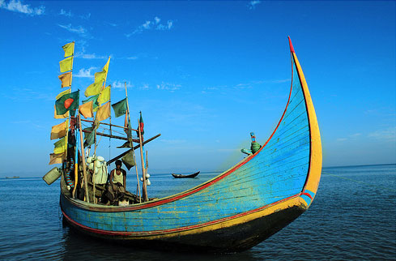

Cox's Bazar
World's Longest Seabeach

Cox's Bazar, the most attractive tourist spots for Bangladesh and not only for Bangladesh.
it's the longest sea beach in the world. Seventy-five miles (120 Kilo miters sandy sea beach with a gentle slop).
About Cox's Bazar
- it is one of the longest sandy sea beaches of the world.
- Cox's Bazar the district stretches up to an area of about 2491.86 square meters.
- The temperature of the Cox's Bazar is about 34.8 degree centigrade.
- The rainfall that is recorded in an average is about 4285mm.
- There are 8 Upzillas known as Ramu, Cox's Bazar Sadar, Maheshkhali, Ukhia, Pekua, Chokoria, Teknaaf and Kutubdia.
Major tourist attractions of coxs-bazar
- Himchari, Aggmeda Khyang, Maheshkhali, Sonadia Island, Laboni Beach and a lot more.
- Aggmeda
- Maheshkhali
- Sonadia Island
- Ramu
- Laboni Beach